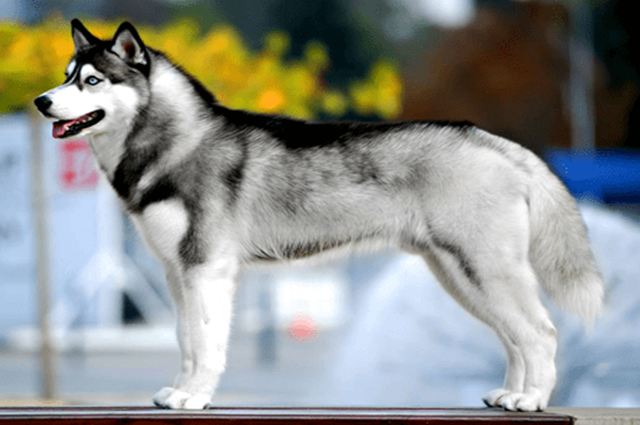
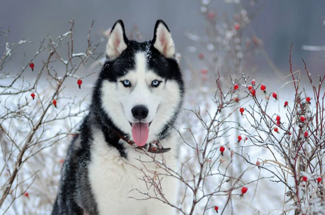

ROTINA
IDEAL
Conheça a rotina do husky siberiano
Talhado para a vida ao ar livre, o Husky gosta de dormir fora de casa. Não é um cão de guarda e é necessário ensiná-lo a viver sozinho ainda muito cedo. Mais do que latir, ele tem a particularidade de uivar. Esse cão nórdico adapta-se bem ao clima temperado.Huskies Siberianos são cães de carga, e eles precisam de um proprietário que seja o líder da matilha. Isso torna o treinamento mais fácil, porque você vai achar que seu cão te respeita, mas não se surpreenda se ele testar os limites da sua posição na matilha e tentar assumir o controle de tempos em tempos.
Por ser um cão ativo e bem energético, o tutor precisa ter uma rotina adequada para suprir as necessidades do Husky Siberiano. O enriquecimento ambiental com brinquedos é uma boa opção, mas é importante que o material dos brinquedos seja bem resistente para não ser destruído ou estragar facilmente, já que o cachorro Husky muitas vezes não têm noção da própria força. Além disso, passeios frequentes são necessários, especialmente no caso de quem não tem um quintal ou espaço apropriado para o Husky gastar energia.